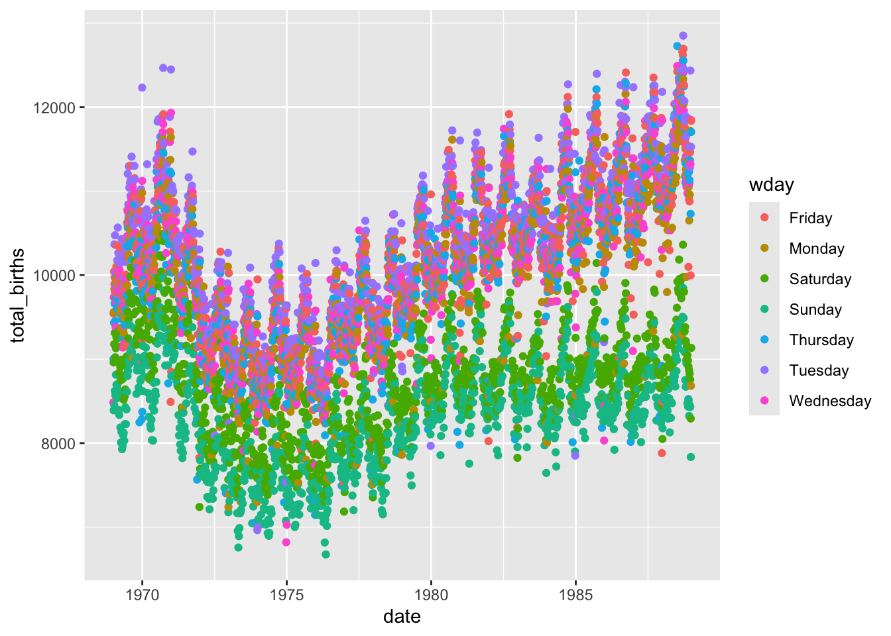
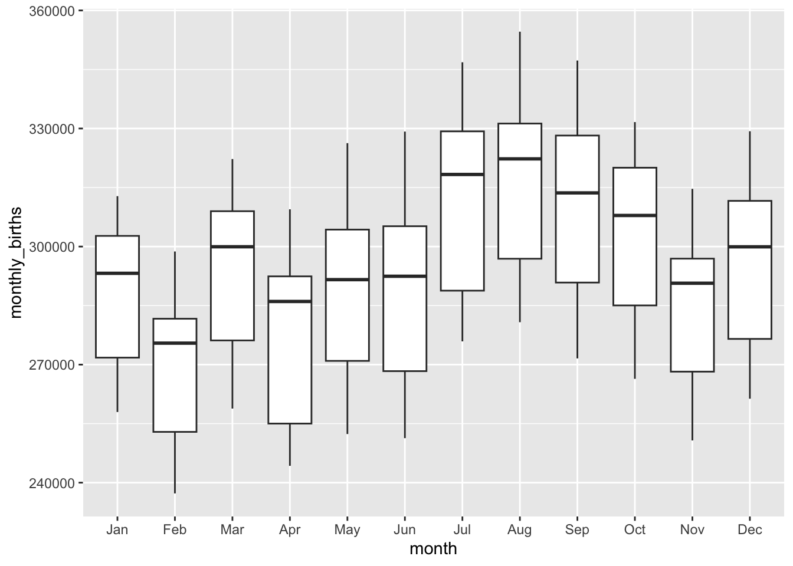
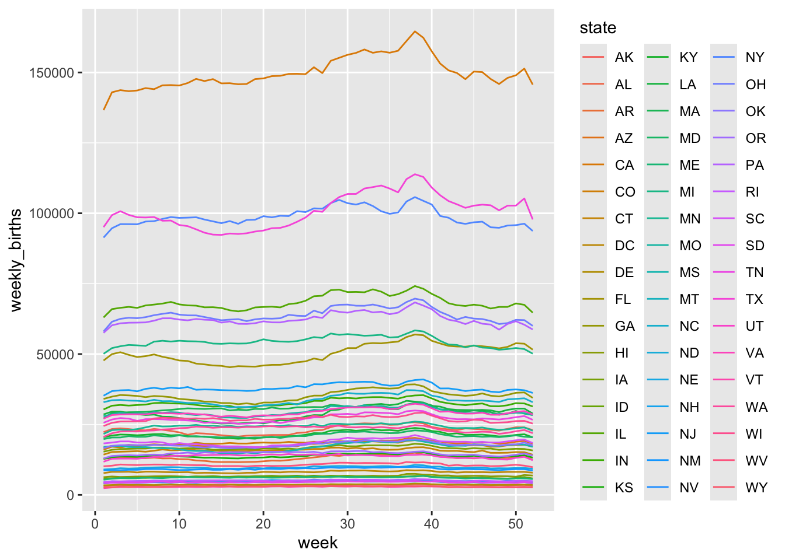
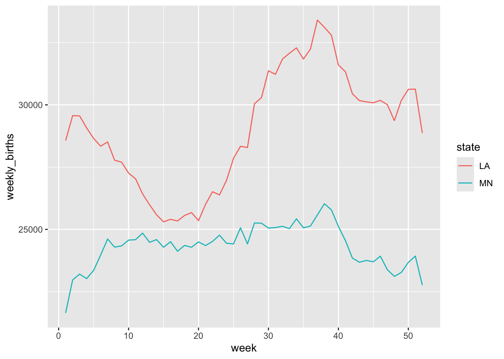
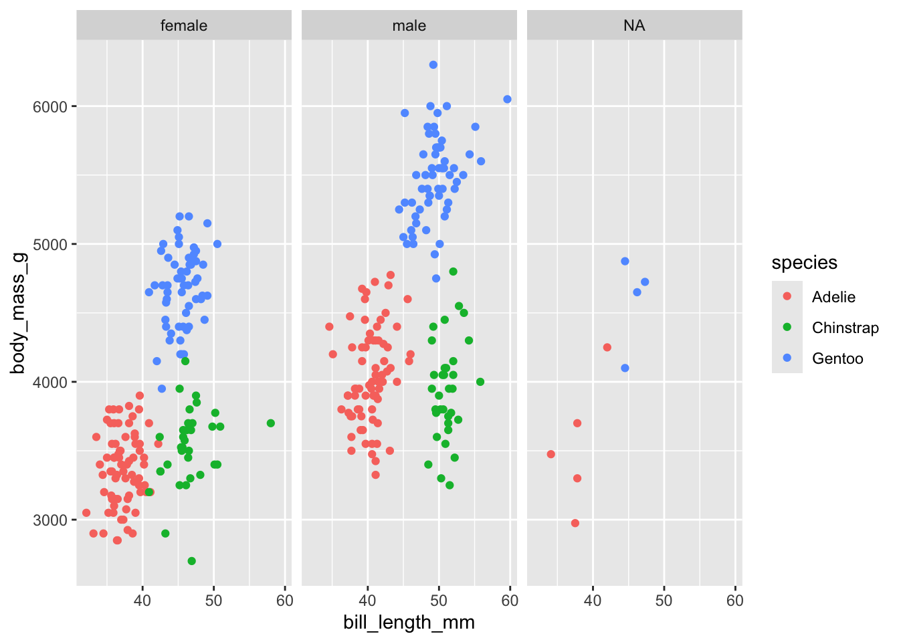

Rows: 344 Columns: 8
── Column specification ────────────────────────────────────────────────────────
Delimiter: ","
chr (3): species, island, sex
dbl (5): bill_length_mm, bill_depth_mm, flipper_length_mm, body_mass_g, year
ℹ Use `spec()` to retrieve the full column specification for this data.
ℹ Specify the column types or set `show_col_types = FALSE` to quiet this message.
Commenting/Uncommenting Code
To comment/uncomment several lines of code at once, highlight them then click ctrl/cmd+shift+c.
# Create a dataset with just Adelie and Chinstrap using %in%# Pipe this into `count(species)` to confirm that you only have these 2 speciespenguins |>filter(species %in%c("Adelie", "Chinstrap")) |>count(species)
# A tibble: 2 × 2
species n
<chr> <int>
1 Adelie 152
2 Chinstrap 68
# Create a dataset with just Adelie and Chinstrap using !=# Pipe this into `count(species)` to confirm that you only have these 2 speciespenguins |>filter(species !="Gentoo") |>count(species)
# A tibble: 2 × 2
species n
<chr> <int>
1 Adelie 152
2 Chinstrap 68
Part b
Notice that some of our penguins have missing (NA) data on some values:
head(penguins)
# A tibble: 6 × 8
species island bill_length_mm bill_depth_mm flipper_length_mm body_mass_g
<chr> <chr> <dbl> <dbl> <dbl> <dbl>
1 Adelie Torgersen 39.1 18.7 181 3750
2 Adelie Torgersen 39.5 17.4 186 3800
3 Adelie Torgersen 40.3 18 195 3250
4 Adelie Torgersen NA NA NA NA
5 Adelie Torgersen 36.7 19.3 193 3450
6 Adelie Torgersen 39.3 20.6 190 3650
# ℹ 2 more variables: sex <chr>, year <dbl>
Handeling NA Values
There are many ways to handle missing data. The right approach depends upon your research goals. A general rule is: Only get rid of observations with missing data if they’re missing data on variables you need for the specific task at hand!
Example 1
Suppose our research focus is just on body_mass_g. Two penguins are missing this info:
# NOTE the use of is.na()penguins |>summarize(sum(is.na(body_mass_g)))
# A tibble: 1 × 1
`sum(is.na(body_mass_g))`
<int>
1 2
Let’s define a new dataset that removes these penguins:
# NOTE the use of is.na()penguins_w_body_mass <- penguins |>filter(!is.na(body_mass_g))# Compare the number of penguins in this vs the original datanrow(penguins_w_body_mass)
[1] 342
nrow(penguins)
[1] 344
Note that some penguins in penguins_w_body_mass are missing info on sex, but we don’t care since that’s not related to our research question:
penguins_w_body_mass |>summarize(sum(is.na(sex)))
# A tibble: 1 × 1
`sum(is.na(sex))`
<int>
1 9
Example 2
In the very rare case that we need complete information on every variable for the specific task at hand, we can use na.omit() to get rid of any penguin that’s missing info on any variable:
penguins_complete <- penguins |>na.omit()
How many penguins did this eliminate?
nrow(penguins_complete)
[1] 333
nrow(penguins)
[1] 344
11 penguins!
Part c
Explain why we should only use na.omit() in extreme circumstances.
Because it indiscriminately removes all the data with n/as in it, when sometimes the specific n/as present won’t matter for your research question
Exercise 2: More Selecting
Being able to select() only certain columns can help simplify our data. This is especially important when we’re working with lots of columns (which we haven’t done yet). It can also get tedious to type out every column of interest. Here are some shortcuts:
-removes a given variable and keeps all others (e.g. select(-island))
starts_with("___"), ends_with("___"), or contains("___") selects only the columns that either start with, end with, or simply contain the given string of characters
Use these shortcuts to create the following datasets.
# Use a shortcut to keep everything but the year and island variablespenguins |>select(-one_of("year", "island"))
# A tibble: 344 × 6
species bill_length_mm bill_depth_mm flipper_length_mm body_mass_g sex
<chr> <dbl> <dbl> <dbl> <dbl> <chr>
1 Adelie 39.1 18.7 181 3750 male
2 Adelie 39.5 17.4 186 3800 female
3 Adelie 40.3 18 195 3250 female
4 Adelie NA NA NA NA <NA>
5 Adelie 36.7 19.3 193 3450 female
6 Adelie 39.3 20.6 190 3650 male
7 Adelie 38.9 17.8 181 3625 female
8 Adelie 39.2 19.6 195 4675 male
9 Adelie 34.1 18.1 193 3475 <NA>
10 Adelie 42 20.2 190 4250 <NA>
# ℹ 334 more rows
# Use a shortcut to keep only species and the penguin characteristics measured in mmpenguins |>select(one_of("species", "bill_length_mm", "bill_depth_mm", "flipper_length_mm"))
# Use a shortcut to keep only species and the length-related characteristicspenguins |>select(one_of("species", "bill_length_mm", "flipper_length_mm"))
Exercise 3: Arranging, Counting, & Grouping by Multiple Variables
We’ve done examples where we need to filter() by more than one variable, or select() more than one variable. Use your intuition for how we can arrange(), count(), and group_by() more than one variable.
# Change this code to sort the penguins by species, and then island name# NOTE: The first row should be an Adelie penguin living on Biscoe islandpenguins |>arrange(species, island)
# Change this code to count the number of male/female penguins observed for each speciespenguins |>count(species, sex)
# A tibble: 8 × 3
species sex n
<chr> <chr> <int>
1 Adelie female 73
2 Adelie male 73
3 Adelie <NA> 6
4 Chinstrap female 34
5 Chinstrap male 34
6 Gentoo female 58
7 Gentoo male 61
8 Gentoo <NA> 5
# Change this code to calculate the average body mass by species and sexpenguins |>group_by(species, sex) |>summarize(mean =mean(body_mass_g, na.rm =TRUE))
`summarise()` has grouped output by 'species'. You can override using the
`.groups` argument.
# A tibble: 8 × 3
# Groups: species [3]
species sex mean
<chr> <chr> <dbl>
1 Adelie female 3369.
2 Adelie male 4043.
3 Adelie <NA> 3540
4 Chinstrap female 3527.
5 Chinstrap male 3939.
6 Gentoo female 4680.
7 Gentoo male 5485.
8 Gentoo <NA> 4588.
Exercise 4: Dates
Before some wrangling practice, let’s explore another important concept: working with or mutating date variables. Dates are a whole special object type or class in R that automatically respect the order of time.
# Get today's dateas.Date(today())
[1] "2025-04-05"
# Let's store this as "today" so we can work with it belowtoday <-as.Date(today())# Check out the class of this objectclass(today)
[1] "Date"
The lubridate package inside tidyverse contains functions that can extract various information from dates. Let’s learn about some of the most common functions by applying them to today. For each, make a comment on what the function does
#gives the current yearyear(today)
[1] 2025
# What do these lines produce / what's their difference?#gives today's month in numerical formmonth(today)
[1] 4
#gives the name of today's month (abbreviated)month(today, label =TRUE)
[1] Apr
12 Levels: Jan < Feb < Mar < Apr < May < Jun < Jul < Aug < Sep < ... < Dec
# What does this number mean?#this is the week of 2025 we are on currentlyweek(today)
[1] 14
# What do these lines produce / what's their difference?#number of days into the month we aremday(today)
[1] 5
#number of days into the year we areyday(today) # This is often called the "Julian day"
[1] 95
# What do these lines produce / what's their difference?#number day of the week we're on (starting from sunday)wday(today)
[1] 7
#day of the week we're on (with labels)wday(today, label =TRUE)
[1] Sat
Levels: Sun < Mon < Tue < Wed < Thu < Fri < Sat
# What do the results of these 2 lines tell us?#the first line is asking if today's date is greater or equal to feb 14th 2024, which it is, so it returns truetoday >=ymd("2024-02-14")
[1] TRUE
#the second line is asking if today's date is less than feb 14th 2024, which it is not, so it returns falsetoday <ymd("2024-02-14")
[1] FALSE
18.2 Exercises Part 2: Application
The remaining exercises are similar to some of those on the homework. Hence, the solutions are not provided. Let’s apply these ideas to the daily Birthdays dataset in the mosaic package.
library(mosaic)
Registered S3 method overwritten by 'mosaic':
method from
fortify.SpatialPolygonsDataFrame ggplot2
The 'mosaic' package masks several functions from core packages in order to add
additional features. The original behavior of these functions should not be affected by this.
Attaching package: 'mosaic'
The following object is masked from 'package:Matrix':
mean
The following objects are masked from 'package:dplyr':
count, do, tally
The following object is masked from 'package:purrr':
cross
The following object is masked from 'package:ggplot2':
stat
The following objects are masked from 'package:stats':
binom.test, cor, cor.test, cov, fivenum, IQR, median, prop.test,
quantile, sd, t.test, var
The following objects are masked from 'package:base':
max, mean, min, prod, range, sample, sum
data("Birthdays")head(Birthdays)
state year month day date wday births
1 AK 1969 1 1 1969-01-01 Wed 14
2 AL 1969 1 1 1969-01-01 Wed 174
3 AR 1969 1 1 1969-01-01 Wed 78
4 AZ 1969 1 1 1969-01-01 Wed 84
5 CA 1969 1 1 1969-01-01 Wed 824
6 CO 1969 1 1 1969-01-01 Wed 100
Birthdays gives the number of births recorded on each day of the year in each state from 1969 to 19881. We can use our wrangling skills to understand some drivers of daily births. Putting these all together can be challenging! Remember the following ways to make tasks more manageable:
Translate the prompt into our 6 verbs (and count()). That is, think before you type.
Build your code line by line. It’s important to understand what’s being piped into each function!
Exercise 5: Warming up
# How many days of data do we have for each state?Birthdays |>group_by(state) |>count("date") |>select(state, n)
# A tibble: 51 × 2
# Groups: state [51]
state n
<chr> <int>
1 AK 7306
2 AL 7312
3 AR 7310
4 AZ 7310
5 CA 7325
6 CO 7305
7 CT 7312
8 DC 7311
9 DE 7307
10 FL 7307
# ℹ 41 more rows
# How many total births were there in this time period?Birthdays |>summarize(sum(births))
sum(births)
1 70486538
# How many total births were there per state in this time period, sorted from low to high?Birthdays |>group_by(state) |>summarize(sum(births)) |>arrange(`sum(births)`)
# A tibble: 51 × 2
state `sum(births)`
<chr> <int>
1 VT 147886
2 WY 154019
3 AK 185385
4 DE 188705
5 SD 235734
6 ND 238696
7 NV 241470
8 MT 253884
9 NH 264984
10 RI 265038
# ℹ 41 more rows
Exercise 6: Homework Reprise
Create a new dataset named daily_births that includes the total number of births per day (across all states) and the corresponding day of the week, eg, Mon. NOTE: Name the column with total births so that it’s easier to wrangle and plot.
Using this data, construct a plot of births over time, indicating the day of week.
ggplot(daily_births, aes(x = date, y = total_births, color = wday)) +geom_point()

Exercise 7: Wrangle & Plot
For each prompt below, you can decide whether you want to: (1) wrangle and store data, then plot; or (2) wrangle data and pipe directly into ggplot. For example:
penguins |>filter(species !="Gentoo") |>ggplot(aes(y = bill_length_mm, x = bill_depth_mm, color = species)) +geom_point()
Warning: Removed 1 row containing missing values or values outside the scale range
(`geom_point()`).
Part a
Calculate the total number of births in each month and year, eg, Jan 1969, Feb 1969, …. Label month by names not numbers, eg, Jan not 1. Then, plot the births by month and comment on what you learn.
`summarise()` has grouped output by 'month'. You can override using the
`.groups` argument.

There seems to be a noticeable peak in the summer/early fall, and a dip in winter/early spring.
Part b
In 1988, calculate the total number of births per week in each state. Get rid of week “53”, which isn’t a complete week! Then, make a line plot of births by week for each state and comment on what you learn. For example, do you notice any seasonal trends? Are these the same in every state? Any outliers?
`summarise()` has grouped output by 'state'. You can override using the
`.groups` argument.

Part c
Repeat the above for just Minnesota (MN) and Louisiana (LA). MN has one of the coldest climates and LA has one of the warmest. How do their seasonal trends compare? Do you think these trends are similar in other colder and warmer states? Try it!
Birthdays |>mutate(year =year(date), week =week(date)) |>filter(week !=53, state %in%c("LA", "MN")) |>group_by(state, week) |>summarize(weekly_births =sum(births)) |>ggplot(aes(x = week, y = weekly_births, color = state)) +geom_line()
`summarise()` has grouped output by 'state'. You can override using the
`.groups` argument.

MN’s birth rates stay relatively stable except for the beginning and end of the year (winter), LA has much more distinct trends.
Exercise 8: More Practice
Part a
Create a dataset with only births in Massachusetts (MA) in 1979 and sort the days from those with the most births to those with the fewest.
MA_births <- Birthdays |>filter(state =="MA", year =="1979") |>arrange(desc(births))
Part b
Make a table showing the five states with the most births between September 9, 1979 and September 12, 1979, including the 9th and 12th. Arrange the table in descending order of births.
Birthdays |>filter(year =="1979", month =="9", day >=9, day <=12) |>arrange(desc(births)) |>head(5)
state year month day date wday births
1 CA 1979 9 12 1979-09-12 Wed 1176
2 CA 1979 9 11 1979-09-11 Tues 1170
3 CA 1979 9 10 1979-09-10 Mon 1108
4 CA 1979 9 9 1979-09-09 Sun 968
5 TX 1979 9 11 1979-09-11 Tues 845
18.3 Solutions
Click for Solutions
Example 1: Single Verb
ggplot(penguins, aes(y = body_mass_g, x = bill_length_mm, color = species)) +geom_point() +facet_wrap(~ sex)
Warning: Removed 2 rows containing missing values or values outside the scale range
(`geom_point()`).

# Get data on only Adelie penguins that weigh more than 4700gpenguins |>filter(species =="Adelie", body_mass_g >4700)
# A tibble: 2 × 8
species island bill_length_mm bill_depth_mm flipper_length_mm body_mass_g
<chr> <chr> <dbl> <dbl> <dbl> <dbl>
1 Adelie Biscoe 41 20 203 4725
2 Adelie Biscoe 43.2 19 197 4775
# ℹ 2 more variables: sex <chr>, year <dbl>
# Get data on penguin body mass only# Show just the first 6 rowspenguins |>select(body_mass_g) |>head()
# A tibble: 6 × 1
body_mass_g
<dbl>
1 3750
2 3800
3 3250
4 NA
5 3450
6 3650
# Sort the penguins from smallest to largest body mass# Show just the first 6 rowspenguins |>arrange(body_mass_g) |>head()
# Calculate the average body mass across all penguins# Note: na.rm = TRUE removes the NAs from the calculationpenguins |>summarize(mean =mean(body_mass_g, na.rm =TRUE))
# A tibble: 1 × 1
mean
<dbl>
1 4202.
# Calculate the average body mass by speciespenguins |>group_by(species) |>summarize(mean =mean(body_mass_g, na.rm =TRUE))
# A tibble: 3 × 2
species mean
<chr> <dbl>
1 Adelie 3701.
2 Chinstrap 3733.
3 Gentoo 5076.
# Create a new column that records body mass in kilograms, not grams# NOTE: there are 1000 g in 1 kg# Show just the first 6 rowspenguins |>mutate(body_mass_kg = body_mass_g/1000) |>head()
# A tibble: 6 × 9
species island bill_length_mm bill_depth_mm flipper_length_mm body_mass_g
<chr> <chr> <dbl> <dbl> <dbl> <dbl>
1 Adelie Torgersen 39.1 18.7 181 3750
2 Adelie Torgersen 39.5 17.4 186 3800
3 Adelie Torgersen 40.3 18 195 3250
4 Adelie Torgersen NA NA NA NA
5 Adelie Torgersen 36.7 19.3 193 3450
6 Adelie Torgersen 39.3 20.6 190 3650
# ℹ 3 more variables: sex <chr>, year <dbl>, body_mass_kg <dbl>
ggplot(penguins, aes(x = species)) +geom_bar()
penguins |>group_by(species) |>summarize(n())
# A tibble: 3 × 2
species `n()`
<chr> <int>
1 Adelie 152
2 Chinstrap 68
3 Gentoo 124
penguins |>count(species)
# A tibble: 3 × 2
species n
<chr> <int>
1 Adelie 152
2 Chinstrap 68
3 Gentoo 124
Example 2: Multiple Verbs
# Sort Gentoo penguins from biggest to smallest with respect to their # bill length in cm (there are 10 mm in a cm)penguins |>filter(species =="Gentoo") |>mutate(bill_length_cm = bill_length_mm /10) |>arrange(desc(bill_length_cm))
# Sort the species from smallest to biggest with respect to their # average bill length in cmpenguins |>mutate(bill_length_cm = bill_length_mm /10) |>group_by(species) |>summarize(mean_bill_length =mean(bill_length_cm, na.rm =TRUE)) |>arrange(desc(mean_bill_length))
# A tibble: 3 × 2
species mean_bill_length
<chr> <dbl>
1 Chinstrap 4.88
2 Gentoo 4.75
3 Adelie 3.88
Example 3: Interpret Code
Exercise 1: More Filtering
Part a
# Create a dataset with just Adelie and Chinstrap using %in%# Pipe this into `count(species)` to confirm that you only have these 2 speciespenguins |>filter(species %in%c("Adelie", "Chinstrap")) |>count(species)
# A tibble: 2 × 2
species n
<chr> <int>
1 Adelie 152
2 Chinstrap 68
# Create a dataset with just Adelie and Chinstrap using !=# Pipe this into `count(species)` to confirm that you only have these 2 speciespenguins |>filter(species !="Gentoo") |>count(species)
# A tibble: 2 × 2
species n
<chr> <int>
1 Adelie 152
2 Chinstrap 68
Part b
Part c
It might get rid of data points even if they have complete information on the variables we need, just because they’re missing info on variables we don’t need.
Exercise 3: Arranging, counting, & grouping by multiple variables
# Change this code to sort the penguins by species, and then island name# NOTE: The first row should be an Adelie penguin living on Biscoe islandpenguins |>arrange(species, island) |>head()
# Change this code to count the number of male/female penguins observed for each speciespenguins |>count(species, sex)
# A tibble: 8 × 3
species sex n
<chr> <chr> <int>
1 Adelie female 73
2 Adelie male 73
3 Adelie <NA> 6
4 Chinstrap female 34
5 Chinstrap male 34
6 Gentoo female 58
7 Gentoo male 61
8 Gentoo <NA> 5
# Change this code to calculate the average body mass by species and sexpenguins |>group_by(species, sex) |>summarize(mean =mean(body_mass_g, na.rm =TRUE))
`summarise()` has grouped output by 'species'. You can override using the
`.groups` argument.
# A tibble: 8 × 3
# Groups: species [3]
species sex mean
<chr> <chr> <dbl>
1 Adelie female 3369.
2 Adelie male 4043.
3 Adelie <NA> 3540
4 Chinstrap female 3527.
5 Chinstrap male 3939.
6 Gentoo female 4680.
7 Gentoo male 5485.
8 Gentoo <NA> 4588.
Exercise 4: Dates
# Get today's dateas.Date(today())
[1] "2025-04-05"
# Let's store this as "today" so we can work with it belowtoday <-as.Date(today())# Check out the class of this objectclass(today)
[1] "Date"
# Records just the 4-digit yearyear(today)
[1] 2025
# Today's month, as a number or labelmonth(today)
[1] 4
month(today, label =TRUE)
[1] Apr
12 Levels: Jan < Feb < Mar < Apr < May < Jun < Jul < Aug < Sep < ... < Dec
# This is the week of the year (1-52)week(today)
[1] 14
# Day of the month (1-31) and day of the year (1-366)mday(today)
[1] 5
yday(today) # This is often called the "Julian day"
[1] 95
# Day of the week as a number or labelwday(today)
[1] 7
wday(today, label =TRUE)
[1] Sat
Levels: Sun < Mon < Tue < Wed < Thu < Fri < Sat
# today is on or after Feb 14, 2024today >=ymd("2024-02-14")
[1] TRUE
# today is not before Feb 14, 2024today <ymd("2024-02-14")
[1] FALSE
The fivethirtyeight package has more recent data.↩︎
Source Code
---title: "Dates"format: html---## Exercises Part 1: Same Verbs, New Tricks### Exercise 1: More Filtering {.unnumbered}Recall the "logical comparison operators" we can use to `filter()` our data:| symbol | meaning ||:-----------------|:--------------------------|| `==` | equal to || `!=` | not equal to || `>` | greater than || `>=` | greater than or equal to || `<` | less than || `<=` | less than or equal to || `%in% c(***, ***)` | a list of multiple values |#### Part a {.unnumbered}```{r}library(tidyverse)penguins <-read_csv('https://raw.githubusercontent.com/rfordatascience/tidytuesday/master/data/2020/2020-07-28/penguins.csv')```::: {.callout-tip title="Commenting/Uncommenting Code"}To comment/uncomment several lines of code at once, highlight them then click <kbd>ctrl/cmd</kbd>+<kbd>shift</kbd>+<kbd>c</kbd>.:::```{r}# Create a dataset with just Adelie and Chinstrap using %in%# Pipe this into `count(species)` to confirm that you only have these 2 speciespenguins |>filter(species %in%c("Adelie", "Chinstrap")) |>count(species)``````{r}# Create a dataset with just Adelie and Chinstrap using !=# Pipe this into `count(species)` to confirm that you only have these 2 speciespenguins |>filter(species !="Gentoo") |>count(species)```#### Part b {.unnumbered}Notice that some of our penguins have missing (`NA`) data on some values:```{r}head(penguins)```::: {.callout-tip title="Handeling `NA` Values"}There are many ways to handle missing data. The right approach depends upon your research goals. A general rule is: Only get rid of observations with missing data if they're missing data on variables you *need* for the specific task at hand!:::**Example 1**Suppose our research focus is *just* on `body_mass_g`. Two penguins are missing this info:```{r}# NOTE the use of is.na()penguins |>summarize(sum(is.na(body_mass_g)))```Let's define a new dataset that removes these penguins:```{r}# NOTE the use of is.na()penguins_w_body_mass <- penguins |>filter(!is.na(body_mass_g))# Compare the number of penguins in this vs the original datanrow(penguins_w_body_mass)nrow(penguins)```Note that some penguins in `penguins_w_body_mass` are missing info on `sex`, but we don't care since that's not related to our research question:```{r}penguins_w_body_mass |>summarize(sum(is.na(sex)))```**Example 2**In the *very rare case* that we need complete information on every variable for the specific task at hand, we can use `na.omit()` to get rid of *any* penguin that's missing info on *any* variable:```{r}penguins_complete <- penguins |>na.omit()```How many penguins did this eliminate?```{r}nrow(penguins_complete)nrow(penguins)```11 penguins!#### Part c {.unnumbered}Explain why we should only use `na.omit()` in extreme circumstances.\Because it indiscriminately removes all the data with n/as in it, when sometimes the specific n/as present won't matter for your research question\### Exercise 2: More Selecting {.unnumbered}Being able to `select()` only certain columns can help simplify our data. This is especially important when we're working with *lots* of columns (which we haven't done yet). It can also get tedious to type out every column of interest. Here are some shortcuts:- `-` *removes* a given variable and keeps all others (e.g. `select(-island)`)- `starts_with("___")`, `ends_with("___")`, or `contains("___")` selects only the columns that either start with, end with, or simply contain the given string of charactersUse these *shortcuts* to create the following datasets.```{r}# First: recall the variable namesnames(penguins)``````{r}# Use a shortcut to keep everything but the year and island variablespenguins |>select(-one_of("year", "island"))``````{r}# Use a shortcut to keep only species and the penguin characteristics measured in mmpenguins |>select(one_of("species", "bill_length_mm", "bill_depth_mm", "flipper_length_mm"))``````{r}# Use a shortcut to keep only species and bill-related measurementspenguins |>select(one_of("species", "bill_length_mm", "bill_depth_mm"))``````{r}# Use a shortcut to keep only species and the length-related characteristicspenguins |>select(one_of("species", "bill_length_mm", "flipper_length_mm"))```\\\\### Exercise 3: Arranging, Counting, & Grouping by Multiple Variables {.unnumbered}We've done examples where we need to `filter()` by more than one variable, or `select()` more than one variable. Use your intuition for how we can `arrange()`, `count()`, and `group_by()` more than one variable.```{r}# Change this code to sort the penguins by species, and then island name# NOTE: The first row should be an Adelie penguin living on Biscoe islandpenguins |>arrange(species, island)``````{r}# Change this code to count the number of male/female penguins observed for each speciespenguins |>count(species, sex)``````{r}# Change this code to calculate the average body mass by species and sexpenguins |>group_by(species, sex) |>summarize(mean =mean(body_mass_g, na.rm =TRUE))```\\\\### Exercise 4: Dates {.unnumbered}Before some wrangling practice, let's explore another important concept: working with or mutating *date* variables. Dates are a whole special object type or class in R that automatically respect the order of time.```{r}# Get today's dateas.Date(today())# Let's store this as "today" so we can work with it belowtoday <-as.Date(today())# Check out the class of this objectclass(today)```The `lubridate` package inside `tidyverse` contains functions that can extract various information from dates. Let's learn about some of the most common functions by applying them to `today`. For each, make a comment on what the function does```{r}#gives the current yearyear(today)``````{r}# What do these lines produce / what's their difference?#gives today's month in numerical formmonth(today)#gives the name of today's month (abbreviated)month(today, label =TRUE)``````{r}# What does this number mean?#this is the week of 2025 we are on currentlyweek(today)``````{r}# What do these lines produce / what's their difference?#number of days into the month we aremday(today)#number of days into the year we areyday(today) # This is often called the "Julian day"``````{r}# What do these lines produce / what's their difference?#number day of the week we're on (starting from sunday)wday(today)#day of the week we're on (with labels)wday(today, label =TRUE)``````{r}# What do the results of these 2 lines tell us?#the first line is asking if today's date is greater or equal to feb 14th 2024, which it is, so it returns truetoday >=ymd("2024-02-14")#the second line is asking if today's date is less than feb 14th 2024, which it is not, so it returns falsetoday <ymd("2024-02-14")```\\\\## Exercises Part 2: ApplicationThe remaining exercises are *similar* to some of those on the homework. Hence, the solutions are not provided. Let's apply these ideas to the daily `Birthdays` dataset in the `mosaic` package.```{r}library(mosaic)data("Birthdays")head(Birthdays)````Birthdays` gives the number of births recorded on each day of the year in each state from 1969 to 1988^[The `fivethirtyeight` package has more recent data.]. We can use our wrangling skills to understand some drivers of daily births. Putting these all together can be challenging! Remember the following ways to make tasks more manageable:- Translate the prompt into our 6 verbs (and `count()`). That is, think before you type.- Build your code line by line. It's important to understand what's being piped into each function!### Exercise 5: Warming up {.unnumbered}```{r}# How many days of data do we have for each state?Birthdays |>group_by(state) |>count("date") |>select(state, n)# How many total births were there in this time period?Birthdays |>summarize(sum(births))# How many total births were there per state in this time period, sorted from low to high?Birthdays |>group_by(state) |>summarize(sum(births)) |>arrange(`sum(births)`)```### Exercise 6: Homework Reprise {.unnumbered}Create a new dataset named `daily_births` that includes the total number of births per day (across all states) and the corresponding day of the week, eg, Mon. NOTE: Name the column with total births so that it's easier to wrangle and plot.```{r}daily_births <- Birthdays |>group_by(date) |>summarize(total_births =sum(births)) |>mutate(wday =weekdays(date))```Using this data, construct a plot of `births` over time, indicating the day of week.```{r}ggplot(daily_births, aes(x = date, y = total_births, color = wday)) +geom_point()```### Exercise 7: Wrangle & Plot {.unnumbered}For each prompt below, you can decide whether you want to: (1) wrangle and store data, then plot; or (2) wrangle data and pipe directly into ggplot. For example:```{r}penguins |>filter(species !="Gentoo") |>ggplot(aes(y = bill_length_mm, x = bill_depth_mm, color = species)) +geom_point()```#### Part a {.unnumbered}Calculate the total number of births in each month and year, eg, Jan 1969, Feb 1969, .... Label month by names not numbers, eg, Jan not 1. Then, plot the births by month and comment on what you learn.```{r}daily_births |>mutate(year =year(date), month =month(date, label =TRUE)) |>group_by(month, year) |>summarize(monthly_births =sum(total_births)) |>ggplot(aes(x = month, y = monthly_births)) +geom_boxplot()```There seems to be a noticeable peak in the summer/early fall, and a dip in winter/early spring.#### Part b {.unnumbered}In 1988, calculate the total number of births per week in each state. Get rid of week "53", which isn't a complete week! Then, make a line plot of births by week for each state and comment on what you learn. For example, do you notice any seasonal trends? Are these the same in every state? Any outliers?```{r}Birthdays |>mutate(year =year(date), week =week(date)) |>group_by(state, week) |>summarize(weekly_births =sum(births)) |>filter(week !=53) |>ggplot(aes(x = week, y = weekly_births, color = state)) +geom_line()```#### Part c {.unnumbered}Repeat the above for just Minnesota (MN) and Louisiana (LA). MN has one of the coldest climates and LA has one of the warmest. How do their seasonal trends compare? Do you think these trends are similar in other colder and warmer states? Try it!```{r}Birthdays |>mutate(year =year(date), week =week(date)) |>filter(week !=53, state %in%c("LA", "MN")) |>group_by(state, week) |>summarize(weekly_births =sum(births)) |>ggplot(aes(x = week, y = weekly_births, color = state)) +geom_line()```MN's birth rates stay relatively stable except for the beginning and end of the year (winter), LA has much more distinct trends.### Exercise 8: More Practice {.unnumbered}#### Part a {.unnumbered}Create a dataset with only births in Massachusetts (MA) in 1979 and sort the days from those with the most births to those with the fewest.```{r}MA_births <- Birthdays |>filter(state =="MA", year =="1979") |>arrange(desc(births))```#### Part b {.unnumbered}Make a table showing the five states with the most births between September 9, 1979 and September 12, 1979, including the 9th and 12th. Arrange the table in descending order of births.```{r}Birthdays |>filter(year =="1979", month =="9", day >=9, day <=12) |>arrange(desc(births)) |>head(5)```## Solutions<details><summary>Click for Solutions</summary>### Example 1: Single Verb {.unnumbered}```{r}ggplot(penguins, aes(y = body_mass_g, x = bill_length_mm, color = species)) +geom_point() +facet_wrap(~ sex)```\\\\```{r}# Get data on only Adelie penguins that weigh more than 4700gpenguins |>filter(species =="Adelie", body_mass_g >4700)# Get data on penguin body mass only# Show just the first 6 rowspenguins |>select(body_mass_g) |>head()# Sort the penguins from smallest to largest body mass# Show just the first 6 rowspenguins |>arrange(body_mass_g) |>head()# Calculate the average body mass across all penguins# Note: na.rm = TRUE removes the NAs from the calculationpenguins |>summarize(mean =mean(body_mass_g, na.rm =TRUE))# Calculate the average body mass by speciespenguins |>group_by(species) |>summarize(mean =mean(body_mass_g, na.rm =TRUE))# Create a new column that records body mass in kilograms, not grams# NOTE: there are 1000 g in 1 kg# Show just the first 6 rowspenguins |>mutate(body_mass_kg = body_mass_g/1000) |>head()```\\\\```{r}ggplot(penguins, aes(x = species)) +geom_bar()penguins |>group_by(species) |>summarize(n())penguins |>count(species)```### Example 2: Multiple Verbs {.unnumbered}```{r}# Sort Gentoo penguins from biggest to smallest with respect to their # bill length in cm (there are 10 mm in a cm)penguins |>filter(species =="Gentoo") |>mutate(bill_length_cm = bill_length_mm /10) |>arrange(desc(bill_length_cm))# Sort the species from smallest to biggest with respect to their # average bill length in cmpenguins |>mutate(bill_length_cm = bill_length_mm /10) |>group_by(species) |>summarize(mean_bill_length =mean(bill_length_cm, na.rm =TRUE)) |>arrange(desc(mean_bill_length))```### Example 3: Interpret Code {.unnumbered}### Exercise 1: More Filtering {.unnumbered}#### Part a {.unnumbered}```{r}# Create a dataset with just Adelie and Chinstrap using %in%# Pipe this into `count(species)` to confirm that you only have these 2 speciespenguins |>filter(species %in%c("Adelie", "Chinstrap")) |>count(species)``````{r}# Create a dataset with just Adelie and Chinstrap using !=# Pipe this into `count(species)` to confirm that you only have these 2 speciespenguins |>filter(species !="Gentoo") |>count(species)```#### Part b {.unnumbered}#### Part c {.unnumbered}It might get rid of data points even if they have complete information on the variables we need, just because they're missing info on variables we don't need.### Exercise 2: More selecting {.unnumbered}```{r}# First: recall the variable namesnames(penguins)``````{r}# Use a shortcut to keep everything but the year and island variablespenguins |>select(-year, -island)``````{r}# Use a shortcut to keep only species and the penguin characteristics measured in mmpenguins |>select(species, ends_with("mm"))``````{r}# Use a shortcut to keep only species and bill-related measurementspenguins |>select(species, starts_with("bill"))``````{r}# Use a shortcut to keep only species and the length-related characteristicspenguins |>select(species, contains("length"))```### Exercise 3: Arranging, counting, & grouping by multiple variables {.unnumbered}```{r}# Change this code to sort the penguins by species, and then island name# NOTE: The first row should be an Adelie penguin living on Biscoe islandpenguins |>arrange(species, island) |>head()``````{r}# Change this code to count the number of male/female penguins observed for each speciespenguins |>count(species, sex)``````{r}# Change this code to calculate the average body mass by species and sexpenguins |>group_by(species, sex) |>summarize(mean =mean(body_mass_g, na.rm =TRUE))```### Exercise 4: Dates {.unnumbered}```{r}# Get today's dateas.Date(today())# Let's store this as "today" so we can work with it belowtoday <-as.Date(today())# Check out the class of this objectclass(today)``````{r}# Records just the 4-digit yearyear(today)``````{r}# Today's month, as a number or labelmonth(today)month(today, label =TRUE)``````{r}# This is the week of the year (1-52)week(today)``````{r}# Day of the month (1-31) and day of the year (1-366)mday(today)yday(today) # This is often called the "Julian day"``````{r}# Day of the week as a number or labelwday(today)wday(today, label =TRUE)``````{r}# today is on or after Feb 14, 2024today >=ymd("2024-02-14")# today is not before Feb 14, 2024today <ymd("2024-02-14")```</details>